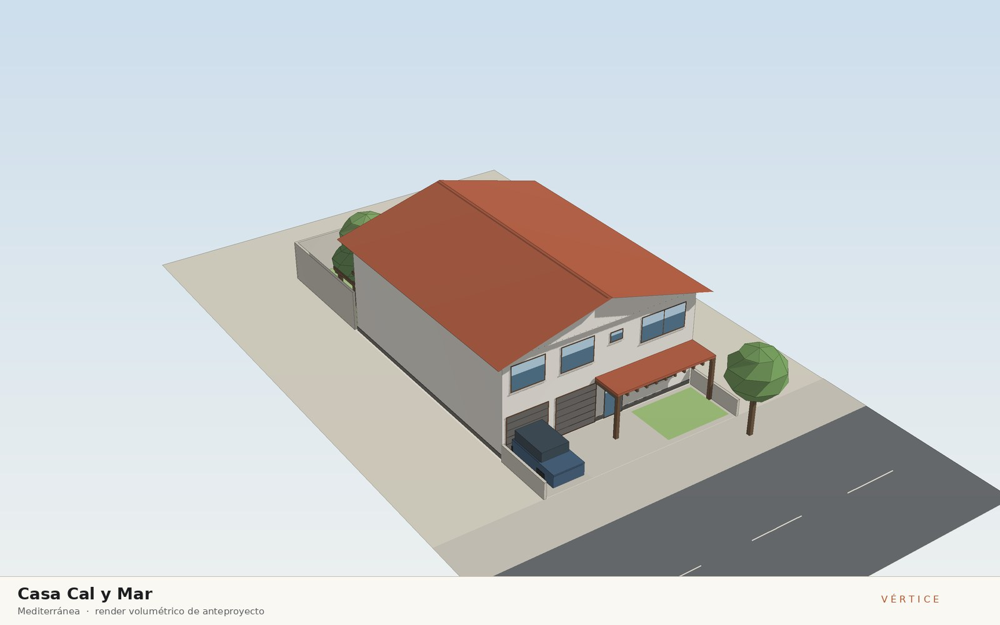
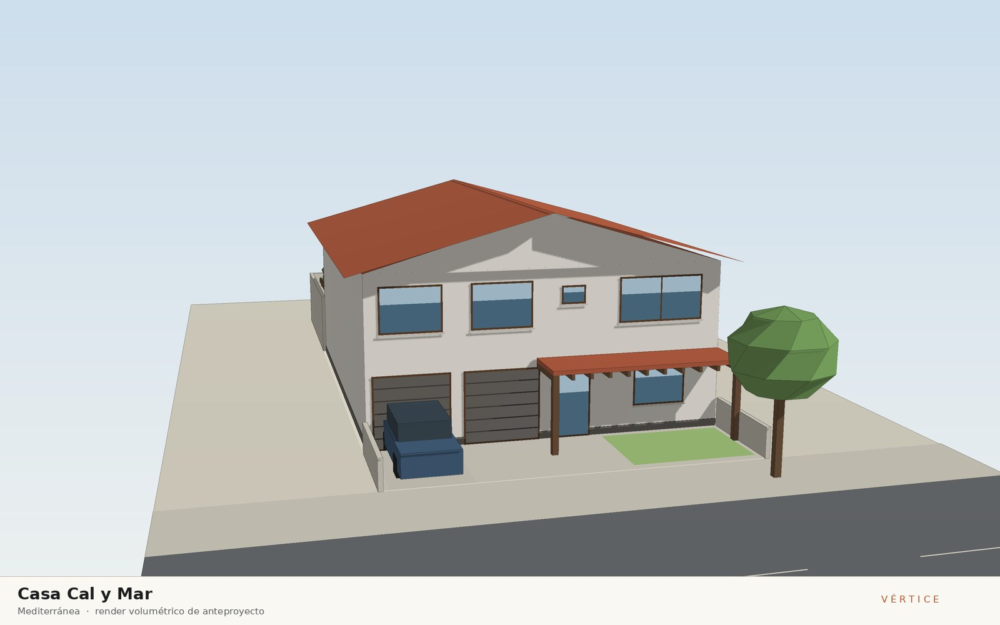
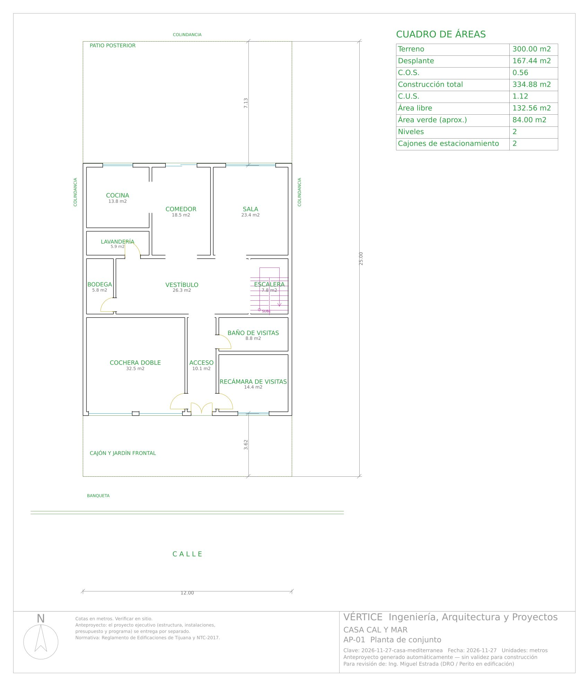
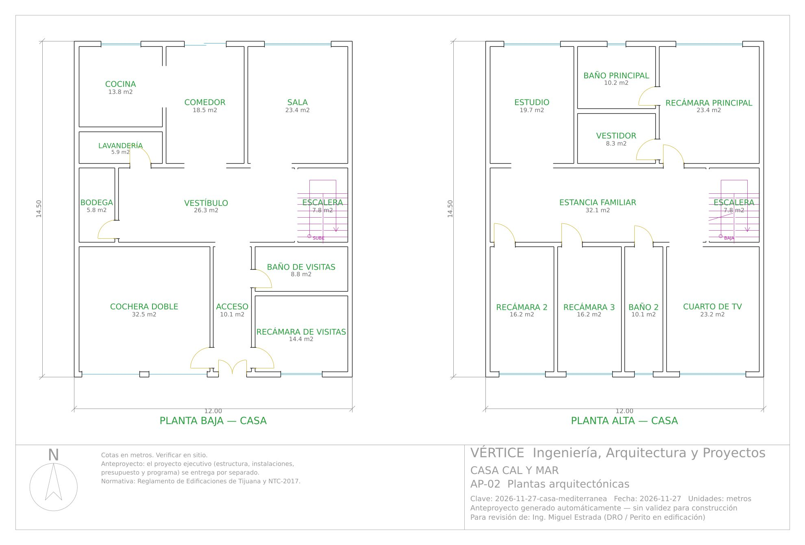
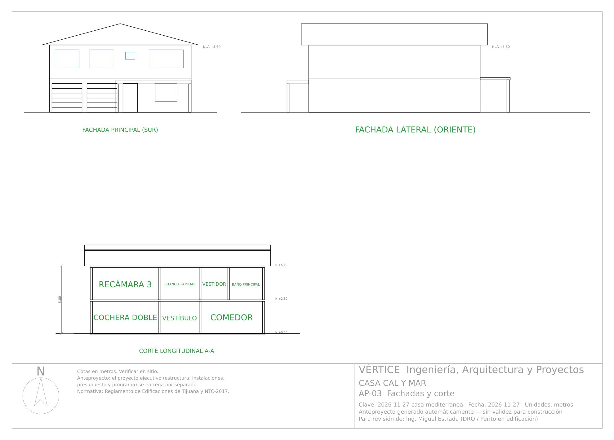

27 de noviembre de 2026 · Casa habitación
Casa Cal y Mar
Corriente: Mediterránea

Concepto
Vivienda de dos niveles en un lote de 12 x 25 m en Tijuana que traduce la casa mediterránea —la que mejor entiende un clima de inviernos lluviosos y veranos secos como el de la costa de Baja California— a muros gruesos de aplanado rústico blanco y una cubierta de dos aguas de teja de barro que escurre la lluvia de invierno hacia oriente y poniente. La fachada sur, la más asoleada, se protege con un porche de madera que cubre el acceso y la ventana de la recámara de visitas, y que hace de portal de llegada como en las casas de pueblo del Mediterráneo; los vanos son medidos (proporción 0.42) para que domine el muro encalado y la herrería azul. Atrás, una pérgola de madera termotratada de 2.50 m de vuelo prolonga sala y comedor hacia el jardín norte como una terraza sombreada para bugambilias, y la brisa marina cruza la casa de norte a sur por el vestíbulo y la estancia familiar. El partido 'recámara en planta baja' resuelve la visita o el adulto mayor sin escaleras, con baño completo junto a ella; las colindancias oriente y poniente quedan ciegas, como pide un lote medianero.
Dictamen del arquitecto
- Terreno de 12.00 x 25.00 m (300 m²); casa de 11.75 x 14.25 m a ejes en 2 niveles, 334.9 m² construidos con desplante de 167.4 m²: COS 0.56 y CUS 1.12, 3.62 m de frente libre y 7.13 m de patio posterior (área libre 132.6 m², ~84 m² de jardín); colindancias oriente y poniente ciegas. Uso habitacional unifamiliar; COS y CUS por verificar con el PDU de Tijuana.
- Partido 'recámara_pb' sin espejo (cochera al poniente), distinto de los dos últimos proyectos de 12 x 25 m (clásico el 19-nov y sala al frente en espejo el 23-nov): recámara de visitas de 4.15 x 3.47 m en planta baja con baño completo de 8.8 m² junto a ella y estudio de 19.7 m² en planta alta.
- Mediterránea con dos rasgos que trabajan juntos: porche de madera termotratada (fondo 1.80 m) sobre el acceso y la ventana de la recámara de visitas en la fachada sur, y pérgola posterior de 2.50 m de vuelo sobre la terraza al jardín norte; cubierta de dos aguas de teja de barro al 30 %, muro encalado y herrería azul, proporción de vano 0.42. Se descartaron muro de acento y jardinera porque la fachada sur no deja paño ciego suficiente; no repite el alero amplio ni la celosía de ayer.
- Recorrido acceso → vestíbulo (26.3 m²) → sala, comedor y cocina al jardín; lavandería y bodega de servicio desde el vestíbulo; zona privada en planta alta alrededor de la estancia familiar (32.1 m²) sin entrar por locales ajenos. Recámaras ≥ 2.90 m de lado y ≥ 14.4 m², todas con ventana al exterior; escalera de 1.15 m con peralte 17.5 cm y huella 29 cm; acceso de 1.20 m; altura libre 2.67 m en ambos niveles.
- Baño de visitas sin ventana: extractor obligatorio. Cocina abierta al comedor y ningún baño abre a cocina o comedor.
Dictamen de ingeniería
- Construible conforme a norma: revisión de coordinación con 0 errores y 0 avisos en 29 verificaciones (arquitectura, estructura, instalaciones, acabados y presupuesto).
- Mampostería confinada de block con castillos K-1 y 11 trabes (T-1 de carga 30x50 sobre la cochera, 5.60 m de claro); losas macizas de 13 cm en entrepiso y azotea (mínimos 12.7 y 12.2 cm). El ciclo de coordinación limitó los vanos abiertos entre locales a 1.80 m, pasó a block de 20 cm los muros en X y dejó 2 muros como divisorios ligeros. Sismo por método simplificado (c = 0.213, T = 0.178 s): VR = 85.0 t en X y 114.4 t en Y ≥ Vu = 74.6 t. Cubierta de teja sobre PTR (30 kg/m²) incluida en la carga muerta de azotea.
- Cimentación con zapatas corridas de 50 cm x 20 cm (ZC-1 perimetral q = 5.40 t/m², ZC-2 interior q = 8.86 t/m² ≤ 12 t/m² supuesta), excéntricas en los linderos oriente y poniente; 77.5 m³ de concreto y 6,422 kg de acero.
- Hidrosanitaria: 6 ocupantes x 150 L/día, toma de 13 mm, cisterna de 2 m³ con hidroneumático, 24 UM (≈ 1.28 L/s), calentador de paso a gas; colector de PVC de 100 mm al 2 % a la red de CESPT con bajadas de baños en muro. Pluvial: 5.6 L/s en 200 m² con 2 bajadas de 100 mm, separadas del sanitario.
- Eléctrica: 18 circuitos, 15,978 W instalados y 11,185 W de demanda, acometida bifásica con interruptor general 2P-100 A (56.5 A) y desbalance de 1.1 %. Gas LP: tanque estacionario de 500 L en el patio, a nivel de piso y a más de 3 m de flamas, red de cobre tipo L con regulador de 2 etapas (NOM-004-SEDG-2004).
- Por confirmar: estudio de mecánica de suelos (q adm de 12 t/m² supuesta), espectro sísmico del sitio y factibilidades de CESPT y CFE. Presupuesto $1,809,315 + IVA ($5,403/m², 40 partidas por cotizar) y 22 semanas de obra. No sustituye la memoria de cálculo definitiva ni la firma del DRO y corresponsables.
Materiales
Muros de block de concreto con aplanado rústico de mortero cal-arena y pintura a la cal blanco hueso; cubierta de dos aguas de teja de barro recocido sobre lámina y largueros de PTR galvanizado con aislante térmico al 30 % de pendiente; porche de madera termotratada con postes de 20 x 20 cm, vigas y cubierta de teja; pérgola de madera termotratada de 2.50 m de vuelo con vigas a cada 0.60 m sobre la terraza posterior; herrería y puerta de acceso en esmalte azul mediterráneo; cancelería de aluminio blanco con vidrio claro de 6 mm; piso de barro tipo terracota 30x30 sellado en zona social y terraza, porcelanato 60x60 en recámaras, antiderrapante 60x60 en baños con lambrín de talavera en regaderas y concreto escobillado en cochera
Vistas

Anteproyecto — descargas
Láminas del anteproyecto






Proyecto ejecutivo
Proyecto ejecutivo completo — 17 láminas. Se entrega por separado; no se publica en esta galería.
Revisión de coordinación arquitectura–estructura–instalaciones–acabados y normativa: Sin errores · 0 avisos en 29 verificaciones.
Arquitectónico
- A-01 Planta de conjunto
- A-02 Plantas arquitectónicas amuebladas
- A-03 Plantas acotadas a ejes
- A-04 Planta de azotea
- A-05 Fachadas
- A-06 Cortes arquitectónicos
- A-07 Cancelería y acabados
Estructural
- E-01 Planta de cimentación
- E-02 Losas, trabes y castillos
- E-03 Detalles estructurales
- E-04 Cuantificación de acero y concreto
Instalaciones
- IH-01 Instalación hidráulica
- IS-01 Instalación sanitaria y pluvial
- IE-01 Instalación eléctrica
- IG-01 Instalación de gas LP
- IH-02 Isométrico hidráulico
- IE-02 Cuadro de cargas y diagrama unifilar
Incluye: Memoria técnica (Word/PDF) · Presupuesto (Excel) · Programa de obra (Excel y Gantt) · Juego de planos (PDF y DXF)
Revisión de calidad
Sin errores · 1 avisos
| Tipo | Nivel | Observación |
|---|---|---|
| Aviso | Casa · Planta baja | Baño de visitas: ventilación mecánica (extractor) obligatoria. |
Cuadro de áreas
Ver los 21 espacios
| Bloque | Nivel | Espacio | Medidas (m) | Área (m²) |
|---|---|---|---|---|
| Casa | Planta baja | Cochera doble | 5.80 x 5.60 | 32.48 |
| Casa | Planta baja | Acceso | 1.80 x 5.60 | 10.08 |
| Casa | Planta baja | Recámara de visitas | 4.15 x 3.47 | 14.41 |
| Casa | Planta baja | Baño de visitas | 4.15 x 2.13 | 8.83 |
| Casa | Planta baja | Bodega | 1.70 x 3.40 | 5.78 |
| Casa | Planta baja | Vestíbulo | 7.75 x 3.40 | 26.35 |
| Casa | Planta baja | Escalera | 2.30 x 3.40 | 7.82 |
| Casa | Planta baja | Lavandería | 3.76 x 1.57 | 5.92 |
| Casa | Planta baja | Cocina | 3.76 x 3.67 | 13.82 |
| Casa | Planta baja | Comedor | 3.52 x 5.25 | 18.51 |
| Casa | Planta baja | Sala | 4.46 x 5.25 | 23.44 |
| Casa | Planta alta | Recámara 2 | 2.90 x 5.60 | 16.24 |
| Casa | Planta alta | Recámara 3 | 2.90 x 5.60 | 16.24 |
| Casa | Planta alta | Baño 2 | 1.80 x 5.60 | 10.08 |
| Casa | Planta alta | Cuarto de TV | 4.15 x 5.60 | 23.24 |
| Casa | Planta alta | Estancia familiar | 9.45 x 3.40 | 32.13 |
| Casa | Planta alta | Escalera | 2.30 x 3.40 | 7.82 |
| Casa | Planta alta | Estudio | 3.76 x 5.25 | 19.74 |
| Casa | Planta alta | Vestidor | 3.52 x 2.36 | 8.33 |
| Casa | Planta alta | Baño principal | 3.52 x 2.89 | 10.18 |
| Casa | Planta alta | Recámara principal | 4.46 x 5.25 | 23.44 |
Anteproyecto conceptual generado por el motor Vértice. El predimensionamiento estructural y los cálculos de instalaciones son preliminares y no sustituyen la memoria de cálculo definitiva, el estudio de mecánica de suelos ni la revisión y firma del DRO y corresponsables.